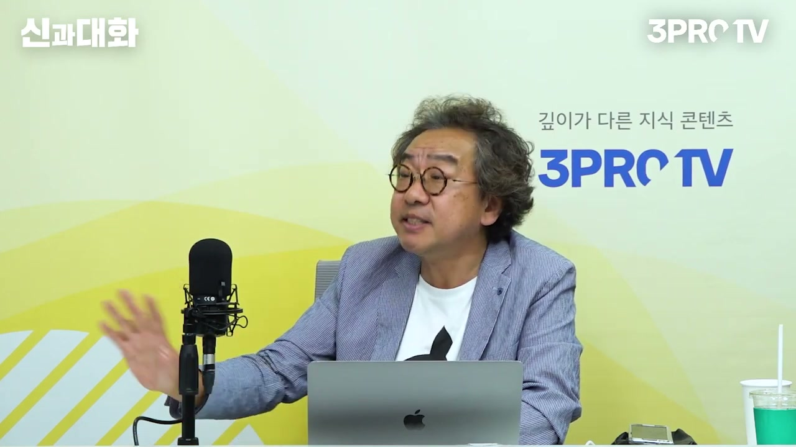
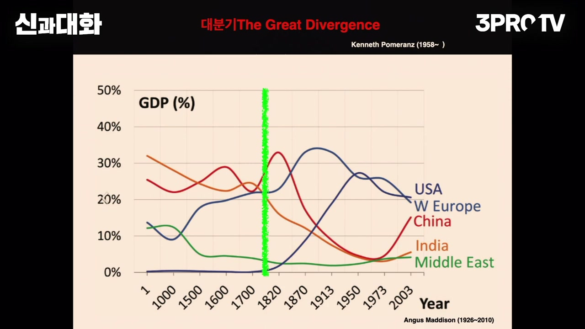
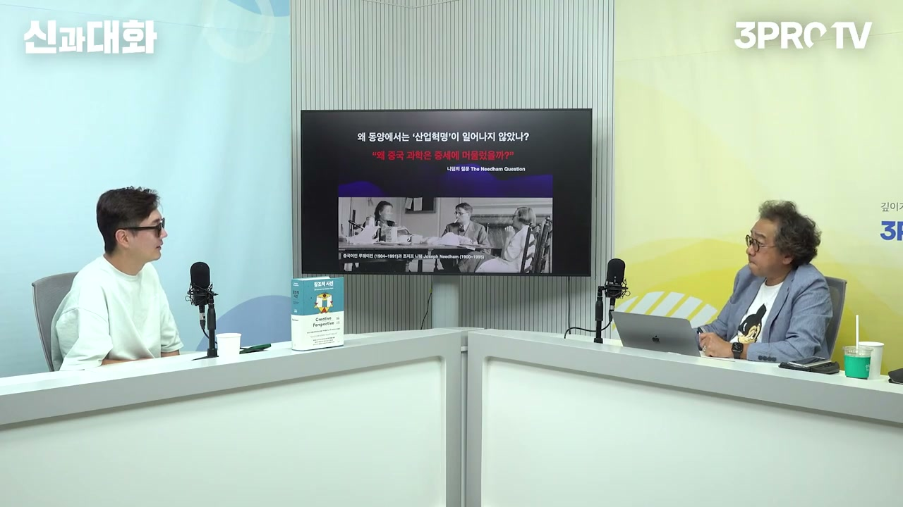
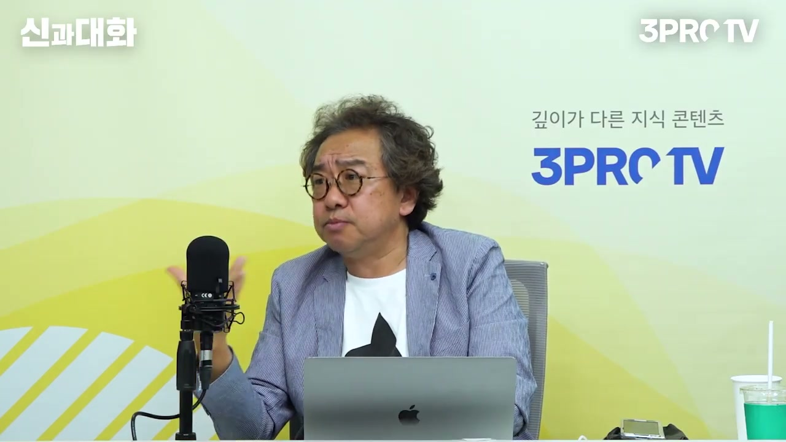
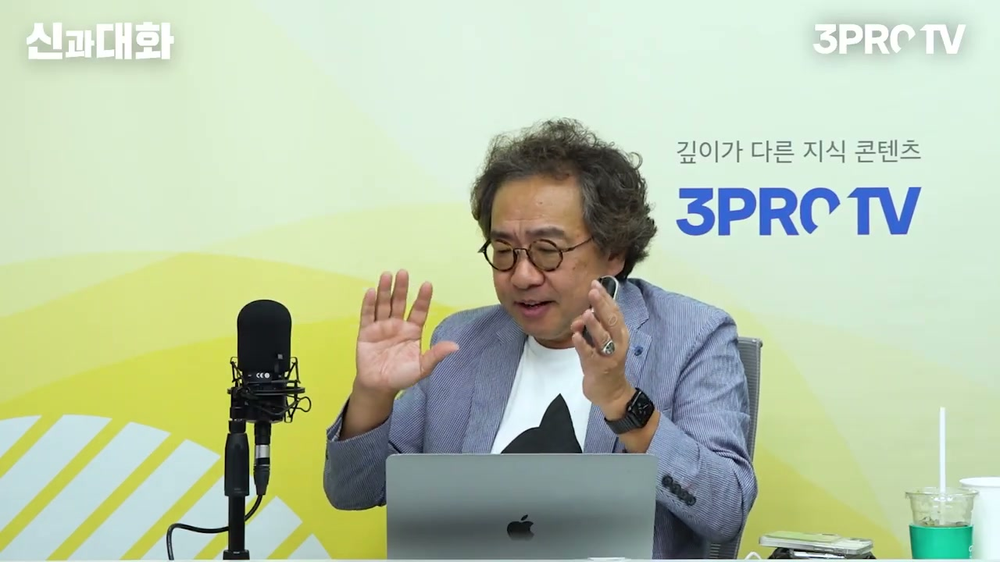
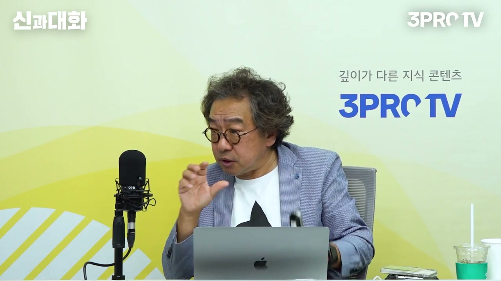
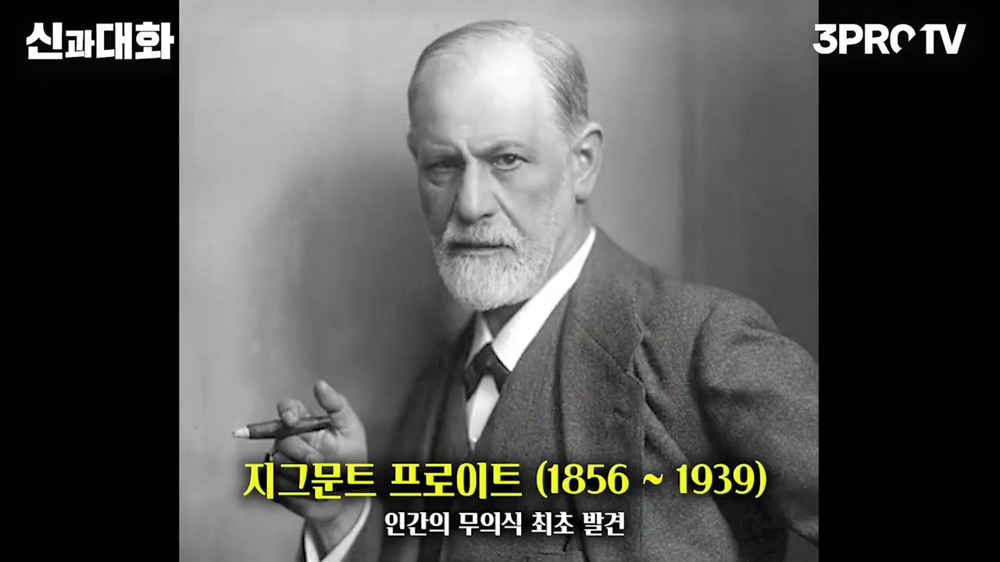
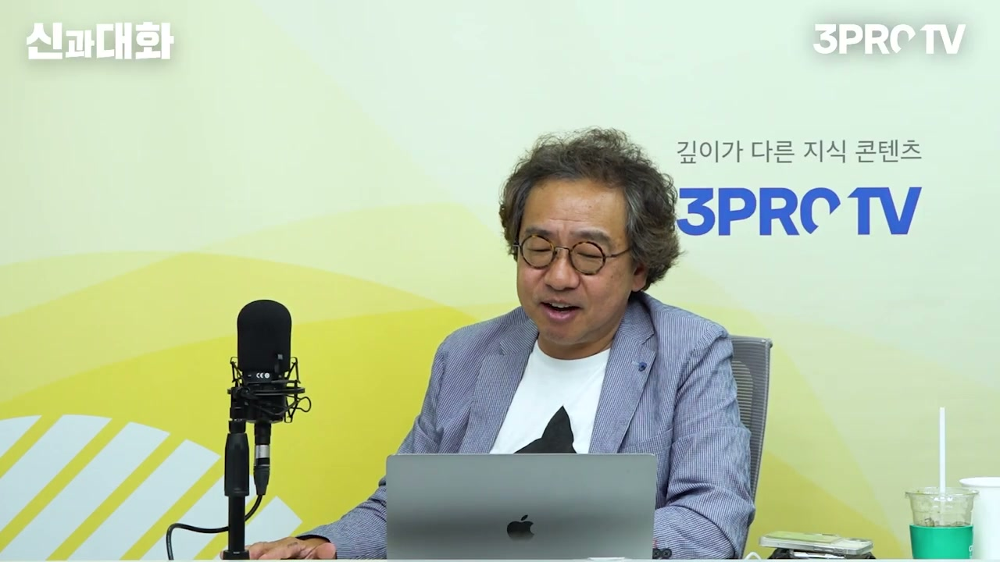
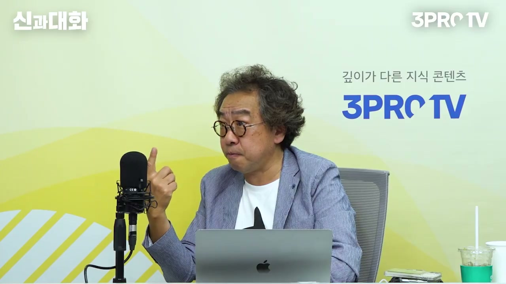

이 글은 전체 3편 중 2편입니다. 긴 영상을 주제 흐름에 맞춰 나누어 정리했습니다.
이 글은 전체 3편 중 2편입니다.
채널: 삼프로TV 3PROTV | 길이: 1:30:47 | 날짜: 2023-07-08
분석 범위: 세그먼트 11-20, 30:32-1:01:35

세그먼트 11은 이전 파트에서 이어진 창조성 논의를 본격적으로 역사와 지식의 문제로 확장한다. 김정운 교수는 사회가 창조성을 말할 때 이상한 개념들을 덧붙이며, 마치 창조성이 일반인과 거리가 먼 특별한 능력인 것처럼 만든다고 비판한다. 누군가에게 “스티브 잡스처럼 창조적이 되라”고 말하는 순간, 그 말은 실은 “너는 스티브 잡스가 될 수 없다”는 불가능성의 선언처럼 작동한다는 것이다.
그가 보기에 스티브 잡스 사례가 중요한 이유는 잡스가 무에서 유를 만든 사람이어서가 아니다. 잡스의 창조성은 이미 존재하던 기술, 디자인, 사용자 경험, 미디어 감각, 시장 감각을 새롭게 묶어낸 편집력에서 나왔다. 김 교수는 자신이 오래전부터 “잡스의 창조성의 근원은 에디팅, 즉 편집이었다”고 말해 왔지만 당시에는 사람들이 잘 듣지 않았다고 한다. 그런데 스티브 잡스 사후에 말콤 글래드웰 같은 유명 저자가 비슷한 취지의 이야기를 하자 뒤늦게 주목받는 상황을 보며, 자신이 먼저 말해 왔다는 아쉬움과 억울함을 드러낸다.
이 대목은 단순한 자기주장이라기보다, 창조성 논의가 권위와 언어권에 의해 어떻게 유통되는지를 보여준다. 같은 내용이라도 한국 학자가 말하면 무시되고, 영어권 유명 저자가 말하면 그제야 인정받는다는 경험이 들어 있다. 그래서 김 교수는 창조성이라는 개념을 다룰 때도 누가, 어떤 언어로, 어떤 맥락에서 말했는지를 봐야 한다는 태도를 보인다. 이것은 뒤에서 구글 Ngram Viewer, 단어의 역사, 1920년대의 시대적 요구로 이어지는 중요한 출발점이다.
김 교수는 산업혁명이라는 말도 무비판적으로 좋은 개념처럼 받아들이면 안 된다고 말한다. 산업혁명은 흔히 증기기관, 공장제, 기계화, 경제성장과 연결되어 긍정적인 단어처럼 쓰인다. 그러나 이미 산업혁명에 대한 비판은 많고, 그래서 그 개념 자체를 이제 그만 쓰자는 논의도 있다고 설명한다. 다만 이미 익숙한 개념이기 때문에 완전히 버리기는 어렵고, 최소한 그 개념이 가진 한계를 알고 써야 한다는 입장이다.
그가 특히 비판하는 것은 “4차 산업혁명”이라는 표현이다. 1차 산업혁명은 역사적으로 특정한 조건과 결과가 있었기 때문에 관습적으로 받아들일 수 있지만, 4차 산업혁명이라는 말은 산업혁명이라기보다 지식혁명, 혹은 지식 편집의 문제에 가깝다고 본다. 김 교수는 산업혁명을 가능하게 만든 핵심이 기계 자체가 아니라 과학과 기술이라는 서로 다른 지식의 결합이었다는 점을 강조한다.
이때 등장하는 인물이 조엘 모키르다. 김 교수는 자신이 산업혁명 관련 책을 읽은 가운데 조엘 모키르의 논의가 가장 훌륭했고 깊은 감명을 받았다고 말한다. 모키르의 핵심은 산업혁명을 가능하게 한 것은 새로운 지식의 탄생, 특히 과학과 기술의 결합이라는 설명이다. 김 교수는 이 설명을 창조성의 관점에서 읽으며, 산업혁명 역시 결국 서로 다른 지식이 편집된 사건이라고 본다.
세그먼트 11의 중요한 역사적 설명은 과학과 기술의 분리다. 오늘날 우리는 과학기술이라는 말을 하나의 단어처럼 사용하지만, 근대 이전 과학과 기술은 전혀 다른 종류의 지식이었다. 과학은 학문으로서 귀족, 학자, 지식인이 다루는 지식이었다. 반면 기술은 장인과 현장 노동자가 몸으로 익히고 전승하는 지식이었다.
이 둘은 사회적 위상도 달랐고, 지식을 다루는 방식도 달랐다. 과학은 이론과 설명의 영역이고, 기술은 제작과 숙련의 영역이었다. 그런데 이 둘이 결합하면서 실용적 지식이 등장했다. 김 교수는 바로 이 실용적 지식이 증기기관을 가능하게 했다고 설명한다.
이 설명에서 중요한 것은 증기기관이 단순히 똑똑한 한 사람이 발명한 물건이 아니라는 점이다. 증기기관은 학문적 과학 지식과 장인적 기술 지식이 서로 만나 편집된 결과다. 창조성도 마찬가지다. 창조는 아무것도 없는 곳에서 신처럼 만들어내는 일이 아니라, 다른 곳에서 온 지식과 경험을 새로운 방식으로 묶는 일이다.

세그먼트 12는 “왜 서양, 특히 영국에서 산업혁명이 일어났는가”라는 질문으로 넘어간다. 이 질문은 곧 “왜 동양에서는 산업혁명이 일어나지 않았는가”라는 질문이기도 하다. 김 교수는 이 논의와 연결해 대분기, 즉 The Great Divergence 개념을 소개한다. 스크린샷의 그래프는 세계 GDP 비중의 장기 변화를 보여주며, 중국·인도·서유럽·미국·중동의 흐름이 비교된다.
김 교수는 우리가 지금 2000년이 넘는 역사 속에 살고 있지만, 그 대부분의 시간 동안 동양이 서양보다 못살았던 것이 아니라고 강조한다. 1750년대, 즉 18세기 중반까지는 중국과 인도를 비롯한 동양이 훨씬 더 잘 살았다. 세계 GDP에서 중국과 인도의 비중은 컸고, 서양은 아직 결정적으로 앞서 있지 않았다. 그런데 바로 그 시기 이후 인도와 중국이 꺾이고, 유럽과 미국이 상승하면서 세계사의 방향이 크게 갈라졌다.
이것이 대분기다. 김 교수는 이 대분기를 기술적 사건만으로 설명하면 부족하다고 본다. 대항해시대 이후 서양이 기술적으로 넘어갔다거나, 중국이 외국에 관심이 없었다는 식의 설명은 일부 맞지만 핵심을 다 담지 못한다. 그래서 그는 다시 조엘 모키르의 지식혁명론으로 돌아간다. 산업혁명의 본질은 산업 그 자체가 아니라 지식이 새롭게 결합되는 방식이라는 것이다.
김 교수는 산업혁명을 가능하게 한 지식들이 어디서 나왔는지를 묻는다. 그 답으로 등장하는 것이 산업계몽주의와 편지 공화국이다. 프랜시스 베이컨 시대의 지식인들은 국경을 넘어 편지를 주고받으면서 지식을 공유했다. 김 교수는 이것을 오늘날 인터넷으로 서로 주식을 논하고 정보를 공유하는 커뮤니티에 비유한다.
편지 공화국은 단순히 친목 모임이 아니었다. 그것은 국경을 넘어 지식이 유통되는 네트워크였다. 지식인들은 자신이 발견한 것, 읽은 것, 생각한 것을 편지로 나누었고, 이 편지의 흔적을 추적하면 지식이 어디서 어떻게 이동했는지 알 수 있었다. 김 교수는 이런 편지의 흔적을 조사하는 연구도 활발히 이루어지고 있다고 말한다.
이 지식 네트워크에서 중요한 작업은 고대인들과의 투쟁이었다. 베이컨과 동시대 지식인들은 아리스토텔레스, 플라톤, 그리스·로마를 무조건 숭배하지 않았다. 그들은 고대인이 살았던 연대는 오래되었지만, 지식의 수준으로 보면 현대의 우리가 훨씬 더 많이 알고 있다고 보았다. 그래서 고대의 권위를 향해 “그 사람들이 뭘 아느냐”는 식으로 도전했다.

세그먼트 12와 13의 중심 질문은 동양과 서양의 차이다. 서양에서는 베이컨을 비롯한 근대 지식인들이 고대 권위를 향해 도전했다. 그들은 그리스·로마로 돌아가야 한다는 주장에 반대하고, 아리스토텔레스와 플라톤의 권위를 절대화하지 않았다. 고대인의 지식은 그 시대에는 위대했지만, 지금의 문제를 해결하기에는 충분하지 않다고 본 것이다.
반대로 동양에서는 공자와 맹자 같은 고전적 권위를 정면으로 들이받는 전통이 약했다고 설명한다. 김 교수는 동양에서는 공자와 맹자에게 “당신들은 어린아이”라고 말하는 사람이 없었다는 식으로 표현한다. 여기서 어린아이라는 비유는 지식이 누적된 시간의 관점에서 나온다. 나중 시대의 사람은 이전 시대보다 더 많은 지식을 가진 상태에서 출발하므로, 무조건 옛사람에게 지혜를 구하는 태도는 문제가 될 수 있다는 것이다.
이 설명은 니덤 질문으로 이어진다. 조지프 니덤은 중국 과학이 중세까지는 매우 발전했는데 왜 근대 이후 서양에 뒤처졌는지를 물었다. “왜 중국에서는 산업혁명이 일어나지 않았는가”라는 질문은 오래된 대표적 질문이다. 김 교수는 이 질문을 단순히 서양 우월론으로 읽지 않는다. 오히려 동양이 오랫동안 앞서 있었기 때문에, 왜 어떤 시점부터 뒤처졌는지를 더 정밀하게 물어야 한다고 본다.
조지프 니덤은 김 교수에게 매우 중요한 지식인으로 소개된다. 그는 중국 과학사에 관해 방대한 연구를 했고, 중국에 가서 관련 연구를 진행했다. 자막에는 니덤의 개인적 관계와 연구 파트너에 대한 농담도 섞여 있다. 김 교수는 그의 사생활을 가볍게 언급하면서도, 지식인으로서는 대단한 사람이고 지금도 관련 저작과 연구가 이어진다고 평가한다.
니덤의 답은 다소 추상적이다. 중국이 관료사회였기 때문에 과학과 기술이 결합하기 어려웠다는 설명이다. 김 교수는 이 답을 조엘 모키르의 관점에서 다시 풀어낸다. 동양에서는 과학과 기술이 결합하기 어려웠고, 그래서 실용적 지식이 나오기 어려웠다. 실용적 지식이 나오지 않으면 증기기관과 같은 산업혁명적 결과도 나오기 어렵다.
그 이유는 고대 권위와의 투쟁이 부족했기 때문이다. 서양에서는 고대의 권위를 부수고 새로운 설명을 만들려는 움직임이 있었다. 동양에서는 공자·맹자적 질서를 재해석하고 반복하는 전통은 강했지만, 그것을 정면으로 깨뜨리는 지적 충돌은 약했다. 김 교수는 산업혁명을 단순한 기술혁신이 아니라 권위와 지식체계를 재편하는 사건으로 읽는다.

세그먼트 14에서 김 교수는 과거제도를 예로 든다. 과거제도는 무조건 나쁜 제도가 아니었다. 하층에 있는 사람도 시험을 통해 신분 상승을 할 수 있었고, 능력을 평가받을 수 있었다. 그런 점에서는 아주 훌륭한 제도였다.
그러나 세상에 영원히 훌륭한 제도는 없다고 말한다. 모든 제도에는 자기 시대가 있다. 한 시대를 발전시킨 동력이 다음 시대에는 발목을 잡을 수 있다. 김 교수는 이것을 역사의 변증법이라고 부른다.
과거제도는 초기에 사회적 이동성과 능력주의를 제공했지만, 시간이 지나면서 암기 중심의 경전 반복을 강화했다. 계속 잘 외워야 했고, 새로운 것을 발명하거나 기존 권위를 공격하는 태도는 장려되지 않았다. 결국 그것은 중국사의 발전을 어느 순간부터 저해하는 역할을 했다고 설명한다. 제도의 장점이 영원히 지속되는 것이 아니라, 시대가 바뀌면 장점이 단점으로 바뀔 수 있다는 것이다.
김 교수는 중국의 과거제도를 설명하다가 한국 현대사로 비유를 확장한다. 산업화 세대는 한국을 잘살게 만들었다. 그들의 노력과 성취는 부정할 수 없다. 그러나 산업화의 동력이 독재와 권위주의로 굳어지면, 그것은 다음 시대의 발목을 잡는다.
민주화 세대도 마찬가지다. 김 교수는 자신의 세대가 민주화 운동을 정말 열심히 했다고 말한다. 민주화 운동은 역사적으로 중요한 역할을 했다. 하지만 오늘날 민주화를 앞장섰던 일부 세력들이 오히려 역사의 발목을 잡는 역할을 하는 느낌이 든다고 말한다.
이 발언의 핵심은 특정 세대를 단순히 비난하는 것이 아니다. 한 시대의 진보성이 다음 시대에도 자동으로 진보성을 보장하지 않는다는 말이다. 어떤 제도, 어떤 세대, 어떤 운동도 자기 시대가 끝나면 스스로를 다시 점검해야 한다. 김 교수의 표현을 빌리면, 자신의 시대가 있다는 사실을 깨달아야 한다.
김 교수는 산업혁명에 대한 기존 설명도 언급한다. 영국에는 노천 석탄이 많았고, 석탄을 구하기 쉬웠으며, 인건비가 높았기 때문에 기계를 사용할 유인이 있었다는 식의 설명이다. 이런 설명은 자원과 비용, 경제적 조건을 중심으로 산업혁명을 해석한다. 하지만 김 교수는 그것만으로는 충분하지 않다고 본다.
조엘 모키르의 설명은 다르다. 그는 산업혁명을 지식의 변화로 본다. 구체적으로는 과학과 기술이 결합해 실용적 지식을 만들었고, 그 지식이 증기기관과 산업혁명의 바탕이 되었다는 설명이다. 김 교수는 이 설명이 훨씬 뛰어나다고 평가한다.
이 설명이 중요한 이유는 창조성 논의와 직접 연결되기 때문이다. 창조성은 새 단어를 붙이고 구호를 만드는 것이 아니다. 서로 다른 지식과 경험이 만나 새로운 작동 방식을 만들 때 창조성이 생긴다. 산업혁명도 그런 의미에서는 거대한 편집 사건이었다.

세그먼트 14 후반과 15는 한국 사회의 개념 사용을 비판한다. 김 교수는 “창조경제”라는 단어가 세상 좋은 것을 갖다 붙인 방식으로 사용되었다고 본다. 특히 박근혜 정부 시절 미래창조과학부 같은 명칭에서 창조라는 단어가 정치적 구호로 쓰였지만, 정작 창조경제가 무엇인지 깊이 이해한 세력이 사용한 말은 아니었다고 비판한다.
그는 창조경제가 무너지자 다시 포괄적이고 그럴듯한 단어를 찾아야 했고, 그때 “4차 산업혁명”이 등장했다고 설명한다. 4차 산업혁명 역시 근본이 없는 개념으로 사용되었다고 본다. 이전 정부에서 4차 산업혁명위원회 같은 것을 만들었지만, 뭘 했는지 흔적도 잘 보이지 않는다고 말한다. 개념을 모르면 이렇게 된다는 것이 그의 판단이다.
그렇다고 김 교수가 창조라는 개념 자체를 버리자는 것은 아니다. 오히려 창조는 여전히 중요하고, 끊임없이 공부해야 하는 개념이라고 말한다. 문제는 창조를 모른 채 정치적 구호나 행정적 명칭으로 갖다 붙이는 방식이다. 그래서 그는 창조성이라는 단어가 어디서 나왔고, 누가 만들었고, 언제부터 쓰였는지를 추적해야 한다고 말한다.
세그먼트 15에서 김 교수는 단어의 역사로 들어간다. 그는 사람들이 창조성이라는 단어가 원래부터 있었던 것처럼 생각하지만 그렇지 않다고 말한다. 이를 확인하기 위해 구글 Ngram Viewer를 사용했다고 설명한다. 구글 Ngram Viewer는 수많은 책을 검색해 특정 단어가 어떤 시기에 얼마나 많이 쓰였는지를 보여주는 도구다.
그가 “creativity”를 검색해 보니 1800년대에는 거의 나오지 않는다. 1900년대 초부터 조금씩 등장하고, 특히 1920년대부터 급격히 올라온다. 김 교수는 이것을 자료가 없어서가 아니라 실제로 그 단어가 거의 쓰이지 않았기 때문이라고 해석한다. 창조성이라는 개념이 우리 생각보다 훨씬 최근에 만들어진 말이라는 것이다.
사람들이 creativity가 오래된 말처럼 느끼는 이유는 creation과 헷갈리기 때문이다. creation은 원래부터 있었다. 그것은 천지창조, 신의 창조, 절대자의 창조를 뜻하는 말이다. 그러나 creativity는 인간이 신처럼 창조하기 시작한다는 의미를 담는다. 김 교수는 인간이 신처럼 되기 시작한 것이 1920년대부터이며, 지금으로부터 대략 100년 정도 된 개념이라고 말한다.
세그먼트 16은 창조성이라는 단어가 왜 1920년대에 급증했는지를 묻는다. 김 교수는 의심하면 찾아봐야 한다고 말한다. 4차 산업혁명 같은 어설픈 단어도 의심해 보아야 하고, 창조성이라는 단어도 마찬가지다. 그는 1900년대부터 1920년대 사이를 집중적으로 공부했다고 한다.
이 시기에 가장 중요한 사건 중 하나는 1차 세계대전이다. 1914년부터 1918년까지 이어진 1차 세계대전 이후, 창조성이라는 단어의 사용이 확 올라온다. 김 교수는 전쟁 전부터 뭔가가 올라오고 있었지만 전쟁으로 억눌렸다가, 전쟁 이후 다시 솟아오른 것처럼 설명한다. 전쟁은 단어의 흐름에도 영향을 준다.
근대성의 문제도 중요하다. 1차 세계대전 이전까지 군대는 가장 합리적인 조직으로 여겨졌다. 참모제도와 General Staff 같은 조직은 근대적 합리성의 상징이었다. 하지만 1차 세계대전에서 그 근대적 합리성이 대량 살상을 만들어냈다. 그래서 근대의 합리성 자체에 대한 근본적인 의심이 생긴다.
김 교수는 단어가 생기는 방식에 대해 중요한 일반론을 제시한다. 새로운 단어는 시대적 요구가 있어야 생긴다. 사회가 어떤 새로운 현상, 감정, 관계, 문제를 설명할 필요를 느낄 때 단어가 만들어진다. 창조성이라는 단어도 그렇게 등장했다.
그는 남녀관계와 “정”이라는 단어를 예로 든다. 서양은 한동안 이혼이 훨씬 많았는데, 남녀관계를 설명하는 단어가 사랑밖에 없었기 때문이라고 말한다. 반면 한국에는 사랑만으로 설명되지 않는 관계를 유지시키는 교묘한 단어들이 있다. 그중 하나가 정이다.
정은 서양식으로는 잘 설명되지 않는 개념이다. 김 교수는 이 단어가 관계를 합리화하거나, 유지하거나, 때로는 속이는 데 쓰이는 개념이라고 농담 섞어 말한다. 핵심은 문화마다 필요한 단어가 다르다는 점이다. 어떤 단어가 생겼다는 것은 그 사회가 그것을 설명해야 할 필요를 가졌다는 뜻이다.

세그먼트 17부터 창조성의 심리학적 배경이 본격적으로 펼쳐진다. 김 교수는 1920년대 전에 가장 중요한 사건으로 윌리엄 제임스를 든다. 윌리엄 제임스는 1890년에 의식의 흐름이라는 개념을 만들어냈다. 오늘날 사람들은 이 말을 생각나는 대로 말하는 것, 잡생각처럼 흐르는 말 정도로 사용하지만, 원래 의미는 훨씬 깊다.
의식의 흐름은 인간 의식의 본질이 물처럼 흘러간다는 주장이다. 생각은 완전히 자발적으로 통제되는 것이 아니라, 비자발적으로 떠오르고 이어지고 흘러간다. 우리는 원래부터 계속 흘러가는 존재였지만, 그것을 잡생각이라고 낮춰 부르거나 별것 아닌 것으로 취급해 왔다. 김 교수는 그 언어를 규정하는 일이 매우 중요하다고 강조한다.
윌리엄 제임스가 의식의 흐름이라는 말을 만들자, 인간 의식에 대한 새로운 영역이 열린다. 생각은 고정된 문장이 아니라 흐르는 과정이 된다. 이 흐름을 이해하면 창조성이 어떻게 생기는지도 다르게 볼 수 있다. 창조적 사고는 명령을 내려서 나오는 것이 아니라, 흘러가는 생각을 어떻게 다루느냐의 문제로 바뀐다.
윌리엄 제임스가 의식의 흐름을 말한 뒤, 프로이트는 그 흐름의 뒤쪽을 들여다본다. 인간은 생각이 흐르는 대로만 사는 존재가 아니라, 그 뒤에 무의식이라는 영역이 있다는 것이다. 김 교수는 프로이트가 무의식을 발견했다기보다 만들어냈다, 혹은 구성했다고 표현하는 편이 맞다고 말한다. 중요한 것은 인간 역사에서 엄청난 사건이 일어났다는 점이다.
그전까지 억눌리고, 의심스럽고, 말하지 못하고, 없는 것으로 처리되던 것들이 있었다. 프로이트는 그것을 무의식이라는 이름의 영역으로 끌어냈다. 인간은 자신이 의식하는 것만으로 움직이는 존재가 아니며, 뒤편에서 작동하는 욕망과 이미지와 기억이 있다는 설명이다. 이 영역은 창조성과 깊게 연결된다.
무의식에 들어가려는 방법론으로 자유연상이 등장한다. 김 교수는 이것을 1913년의 중요한 사건처럼 언급한다. 자유연상은 떠오르는 대로 생각을 이어 가는 방식이다. 창조성은 바로 이런 흐름, 비자발적 연상, 억눌린 무의식의 영역과 관련된다.
김 교수는 멍하니 있을 때 우리가 가장 창조적이라고 말한다. 여기서 멍함은 아무것도 하지 않는 무능이 아니다. 생각이 통제된 문장으로 움직이지 않고, 이미지와 연상으로 흘러가는 상태다. 그런 상태에서 생각은 예상하지 못한 곳까지 이동한다.
보통 사람은 어느 정도까지 갔다가 다시 돌아온다. 갑자기 멍해지다가 “내가 왜 이런 생각을 하지?” 하고 현실로 돌아온다. 천재는 보통 사람보다 훨씬 더 멀리 간다. 하지만 중요한 것은 돌아온다는 점이다.
김 교수는 천재와 기이한 사람의 차이를 “종이 한 장 차이”로 비유한다. 멀리 가기만 하고 돌아오지 못하면 사회적으로 이상한 사람처럼 보일 수 있다. 반대로 멀리 갔다가 돌아와 그것을 표현하고 구성할 수 있으면 창조가 된다. 창조성은 단순히 흘러가는 것이 아니라, 흘러간 뒤 다시 돌아와 편집하고 표현하는 능력까지 포함한다.

세그먼트 18은 사고의 본질을 다룬다. 김 교수는 생각이 문장인지 그림인지 묻고, 그림으로 생각하라고 말한다. 우리는 흔히 생각을 문장으로 한다고 믿지만, 실제로 멍하니 있을 때 생각은 문장처럼 가지 않는다. 이미지, 장면, 사람, 장소, 느낌이 이어지며 흘러간다.
그는 밥을 먹은 장면, 친구 명자, 명자의 친구 숙자, 숙자의 남자친구 같은 예를 들며 생각의 연쇄가 문장이 아니라 이미지로 간다고 설명한다. 복잡한 문제를 풀 때만 우리는 문장적으로 생각한다. 어려운 문제를 만나면 중얼거리거나 말로 정리하려는 이유도 여기에 있다. 문장은 복잡한 상황에서 쓰는 고도의 처리 방식이지만, 생각의 본질은 회화적이고 시각적이라는 것이다.
김 교수는 문장적 사고를 고대 인지적 처리 방식이라고 표현한다. 반면 날아가는 생각, 흘러가는 생각은 회화적이다. 과거의 일도 이미지로 떠올리고, 아직 직접 보지 않은 미래의 일도 이미지로 상상할 수 있다. 이 때문에 상상력과 창조성은 시각적 사고와 깊게 연결된다.
김 교수는 게슈탈트 심리학과 비주얼 씽킹을 언급한다. 게슈탈트 심리학에서는 시각적 사고가 중요하게 다루어진다. 날아가는 생각의 특징은 시각적 사고가 가진 본질과 연결된다. 생각은 색, 형태, 구도, 이미지의 방식으로 움직인다.
이 사고를 교육에 적용하려 한 사람이 등장한다. 김 교수는 창조성은 단순히 교육으로 되는 것이 아니라고 하면서도, 바우하우스의 어떤 시도가 창조성을 교육할 수 있다고 믿었다는 점을 소개한다. 이와 관련해 조형적 사고라는 개념이 등장한다. 바우하우스에서 만든 교재가 조형적 사고에 관한 책이라는 설명도 나온다.
핵심은 우리가 생각을 조형적으로 한다는 것이다. 흘러가는 생각은 회화적으로 움직이지만, 그것을 조용히 붙잡고 색과 형태 같은 요소로 편집할 수 있다면 사고의 흐름도 어느 정도 잡아낼 수 있다. 바우하우스의 실험은 바로 이 가능성을 건드린다. 창조성 교육은 “창의적으로 되라”는 구호가 아니라, 색·형태·구성·편집을 통해 생각을 다루는 훈련과 관련된다.
세그먼트 19부터 김 교수는 칸딘스키로 넘어간다. 그는 창조성과 관련된 또 하나의 중요한 사건으로 인류 최초의 추상화를 든다. 칸딘스키는 러시아 사람이지만 독일 뮌헨에서 미술 활동을 하면서 추상화를 그렸다. 김 교수는 1910년을 중요한 시점으로 말하며, 칸딘스키가 자기 작품의 연도를 1910년으로 주장했다는 이야기도 덧붙인다.
그전까지 그림은 대상을 똑같이 그리는 것이 상식이었다. 화가는 대상을 최대한 잘 묘사하고, 다시 보여주는 사람이었다. 이것이 representation, 즉 표상이다. 그림은 현실 대상을 다시 보여주는 방식이었다.
하지만 사진기가 등장하면서 상황이 완전히 바뀐다. 대상을 똑같이 그리는 일은 사진과 경쟁할 수 없게 되었다. 그러면 그림은 무엇을 해야 하는가. 김 교수는 여기서 화가들이 새로운 것을 만들어야 하는 압박을 받았다고 설명한다. 없는 것을 만들어야 하고, 단순 모사가 아닌 새로운 표현을 찾아야 했다.
세그먼트 19와 20에서 김 교수는 자신이 일본에서 미술 공부를 했고, 지금도 화가라고 농담처럼 말한다. 그는 누군가를 그려 주면 사람들이 별로 좋아하지 않는다고 한다. 이유는 닮지 않았다는 것이다. 그런데 김 교수는 자신이 왜 닮게 그려야 하느냐고 반문한다. 사진을 찍으면 닮게 나오는 일은 충분히 가능하기 때문이다.
그에게 그림은 대상을 똑같이 복사하는 것이 아니다. 그림은 그 대상을 바라보는 나의 시선이다. 예를 들어 정프로를 그린다면, 그것은 정프로의 사진 같은 복제가 아니라 정프로를 바라보는 김정운 자신의 그림이다. 사람들은 여전히 닮게 그린 그림을 잘 그린 그림이라고 생각하지만, 사진 이후에는 그 기준이 흔들릴 수밖에 없다.
인상주의와 표현주의 이후 그림은 더 이상 대상과 똑같이 생긴 것이 아니다. 대상을 다시 보여주는 표상의 의미가 바뀐다. 사진이 이미 대상의 재현을 훨씬 더 잘 수행하기 때문에, 그림은 새로운 역할을 찾아야 한다. 그 결과 예술가는 모사가 아니라 창조를 요구받는다.

김 교수는 추상화가들이 음악을 흉내 내기 시작했다고 설명한다. 음악은 원래 외부에 똑같이 존재하는 대상을 복사하는 예술이 아니다. 음표는 자연에 원래 있던 대상이 아니라, 소리를 기호로 표시한 체계다. 음악가는 음표와 소리를 가지고 새로운 세계를 만들어낸다.
추상화가들은 바로 이 점에 주목했다. 화가도 음악가처럼 형태와 색을 가지고 새로운 세계를 만들 수 있지 않을까. 칸딘스키가 추상화를 그리기 시작한 배경에도 음악이 있다. 그는 첼로와 피아노를 잘 다루었고, 음악과 미술의 관계에 민감했다.
김 교수는 칸딘스키가 쇤베르크의 음악회에서 감명을 받았다고 설명한다. 쇤베르크의 무조음악, 12음 기법과 연결되는 현대음악의 실험이 칸딘스키에게 중요한 자극이 되었다. 음악이 대상을 모사하지 않고도 완전한 세계를 만들 수 있다면, 그림도 대상 없이 색과 형태만으로 세계를 만들 수 있다. 이것이 추상화의 창조적 전환이다.

김 교수는 칸딘스키와 함께 바우하우스의 맥락을 계속 이어간다. 바우하우스는 색과 형태를 다루는 교육을 통해 조형적 사고를 훈련하려 했다. 음악가가 음표를 가지고 작곡하듯, 화가도 색과 형태를 가지고 구성할 수 있다는 발상이다. 이것은 창조성을 단순한 영감이 아니라 요소의 편집과 구성으로 보는 관점과 맞닿아 있다.
음악을 흉내 낸다는 말은 단순한 모방이 아니다. 음악은 대상 없이도 성립하는 예술이다. 그러므로 미술이 음악을 흉내 낸다는 것은, 미술도 대상의 복사에서 벗어나 색·형태·구성의 자율성을 얻는다는 뜻이다. 이는 추상화의 탄생과 바우하우스 교육이 같은 시대적 요구 안에 놓여 있음을 보여준다.
김 교수는 창조성이라는 단어가 1920년대에 올라온 이유를 이런 흐름 속에서 읽는다. 1차 세계대전 이후 근대 합리성은 흔들렸고, 의식의 흐름과 무의식은 인간 내면의 새로운 영역을 열었으며, 사진은 회화의 재현 기능을 흔들었고, 음악은 추상미술의 모델이 되었다. 이 모든 변화가 모여 인간이 신처럼 무언가를 만들어낸다는 creativity의 필요성을 만들어냈다.
“지식이 편집된 거죠.”
이 말은 산업혁명과 창조성을 연결하는 핵심 문장이다. 과학과 기술, 학문과 장인 지식, 동양과 서양의 차이, 바우하우스의 색과 형태도 모두 편집이라는 관점으로 이어진다.
“자기 시대가 있는 거예요.”
과거제도, 산업화 세대, 민주화 세대에 대한 논의를 관통하는 말이다. 한 시대의 훌륭한 제도나 세력도 다음 시대에는 장애물이 될 수 있다는 역사관을 압축한다.
“생각은 그림이에요.”
창조성의 심리학적 핵심을 드러내는 발언이다. 인간의 사고는 문장보다 이미지, 장면, 연상, 시각적 흐름에 가깝고, 창조성은 이 흐름을 다루는 능력과 관련된다.
“시대적 요구가 있어야 단어가 생기는 겁니다.”
창조성이라는 단어가 1920년대에 급증한 이유를 설명하는 문장이다. 단어는 그냥 생기지 않고, 사회가 어떤 현상과 욕구를 설명해야 할 필요를 느낄 때 만들어진다.
“멍하니 있을 때가 가장 창조적일 때예요.”
이 발언은 의식의 흐름, 무의식, 자유연상, 시각적 사고를 창조성으로 연결한다. 통제된 사고보다 흘러가는 사고가 창조적 가능성을 품는다는 주장이다.
이 파트의 핵심은 창조성을 신비화하지 말고 역사화하라는 것이다. 김정운 교수는 창조성을 천재 개인의 특별한 능력으로 보지 않는다. 그는 창조성을 서로 다른 지식의 편집, 시대적 요구에 따른 단어의 탄생, 이미지로 흘러가는 사고의 포착, 기존 제도와 권위의 해체, 음악과 미술 사이의 방법론적 전환으로 설명한다.
산업혁명은 단순히 기계의 사건이 아니라 과학과 기술이 결합한 지식 편집의 사건이다. 대분기는 동양이 원래 못살았다는 이야기가 아니라, 동양이 오랫동안 앞서 있었음에도 왜 어느 시점부터 뒤처졌는지를 묻는 질문이다. 동양의 과거제도와 경전 중심 문화는 한때 훌륭했지만, 새로운 시대에는 과학과 기술의 결합, 고대 권위와의 투쟁, 실용적 지식의 생산을 막는 요인이 될 수 있었다.
창조경제와 4차 산업혁명 비판은 한국 사회가 개념을 얼마나 쉽게 구호로 소비하는지를 보여준다. 김 교수는 창조라는 말이 중요하지 않다고 말하는 것이 아니라, 너무 중요하기 때문에 함부로 쓰면 안 된다고 말한다. 창조성은 원래부터 있던 단어가 아니며, 1920년대 전후의 전쟁, 근대성의 위기, 심리학, 무의식, 추상미술, 바우하우스 교육의 맥락 속에서 생겨난 개념이다.
실용적 시사점은 분명하다. 창조적이 되라는 명령보다 먼저, 어떤 지식들을 편집할 것인지 물어야 한다. 어떤 낡은 권위를 부술 것인지, 어떤 시대적 요구가 새 단어를 만들고 있는지, 생각이 문장이 아니라 이미지로 흐른다는 사실을 어떻게 다룰 것인지, 그리고 사진 이후의 회화처럼 기존 기능을 잃은 분야가 어떻게 새로운 역할을 찾아야 하는지를 보아야 한다. 이 파트는 창조성을 개인의 재능 문제가 아니라 문명사, 지식사, 심리학, 예술사의 교차점에서 다시 읽게 만든다.
댓글
GitHub 이슈 기반 댓글 시스템입니다.